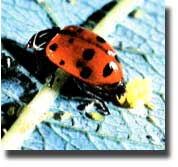
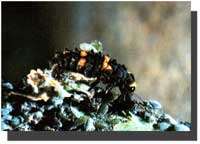
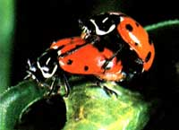

Here's the seventh in a series of articles that will help you tell friend from foe in your garden.
Few gardeners fail to recognize the friendly ladybird beetle, also known as the ladybug. This fierce little predator is one of nature's prime defenses against many garden pests, especially aphids. The moniker ladybug refers to Our Lady, the Virgin Mary, and was gratefully bestowed upon this beetle in the Middle Ages by farmers who realized the insect's value in ridding their grapevines of pests. But though the ladybird's actions have been extolled for centuries, few people really understand the biology of this tiny benefactor ... and fewer still can discern the ladybug's immature forms.
Of the hundreds of species of ladybird beetles (family Coccinellidae), the most widespread and familiar is the convergent ladybird beetle, Hippodamia convergens, which is pictured here. The brilliant red color of this and similar species is not intended to dazzle human retinas but serves as a warning to predators, for the body fluids of these beetles are quite distasteful. Red, orange, and yellow species are most prevalent, but you might run across black, tan, or multicolored ladybirds, as well.
Like most insects that undergo complete metamorphosis, the ladybug begins its life as an egg. The adult female lays clusters of these minute, bright yellow gems in crevices of tree bark or on the undersides of protected leaves where there's a sufficient number of prey to support the larvae. From each egg emerges a tapered larva that's typically charcoal gray with white, orange, or red markings and that bears a certain resemblance to a chubby miniature alligator.
Though the adult ladybirds are also predators, it's the immature larvae that take the largest toll on garden pests. Ravenous in appetite, a larva may consume as many as 40 aphids in a single hour! Other soft-bodied creatures are also on its menu, including mealy bugs , immature scale insects, young whiteflies, small caterpillars, and mites. The larva-which ranges in size from 1/16" to 1/4", depending on its maturity-completes its growth in about 20 days, at which point it fastens itself to a leaf or other object, hangs its head downward, and enters the pupal stage, forming a teardrop-shaped cocoon in which the transformation into an adult beetle takes place.
I've successfully redistributed ladybird larvae in my garden, taking some from areas having sparse aphid populations and placing them on more severely infested plants. If undertaken before the aphids have a chance to reach damaging proportions, this technique can be an effective (and timesaving) alternative to using soap sprays or crushing the pests by hand. Of course, adult beetles can be relocated as well, but since they have the power of flight at their disposal, they're not as easy to manipulate as the wingless larvae.
Convergent ladybird beetles are found throughout North America. The adults frequently over winter in groups, sometimes in tremendous numbers. In the West, the beetles migrate to mountain canyons, where literally thousands of the insects can be found huddled together throughout the winter. Such congregations have proved tempting to many gardeners and have even sparked a few businesses that harvest the masses of ladybugs and then sell them. Unfortunately, unless the beetles have been fed a special diet to reactivate their reproductive ability from a state of ovarian diapause, the transplanted beetles will have an overwhelming urge to fly off and reaggregate ... so the benefits of importing beetles to the garden are often nil. It's generally better to work with the existing adults and larvae in your growing plot than to buy them elsewhere. If you do purchase Hippodamia beetles, be sure your stock has been "preconditioned" so they'll be ready to feed and to lay eggs.
Every family, of course, seems to have its black sheep, and the Coccinellidae is no exception. Two phytophagous-or plant-feeding-species, the Mexican bean beetle (Epilachna varivestis) and the squash beetle (E. borealis), commonly defoliate those plants after which they're named. You can identify the larvae of these beetles by their fuzzy, lemon yellow coats, as these two are the only large members of the family to sport such attire. Although these particular pests do inflict a considerable amount of damage both as larvae and adults, the hundreds of beneficial species in the Coccinellidae family more than compensate for the duo's bad behavior. In my ledger, this clan's bottom line is always in the black!
|
 Ladybird beetles generally lay their eggs near aphids or other prey. |
 A ladybird larva munches its way through a meal. During this soft-bodied stage, the ladybird takes its largest toll on garden pests. |
 Mature beetles mate. |